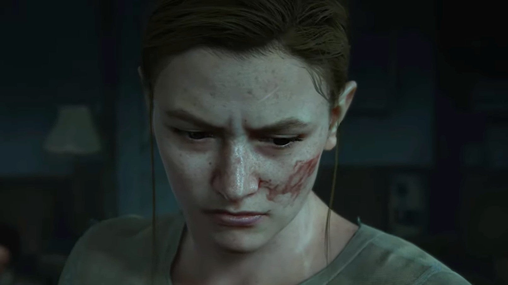

ABBY ANDERSON
"Nós deixamos vocês viverem... e vocês desperdiçaram isso" — Abby para Ellie e Tommy
Quando conhecemos Abby, ela é um membro importante da WLF. Apesar da reputação como lutadora formidável, a presença estoica e imponente esconde sua vulnerabilidade. Anteriormente, ela e o pai faziam parte dos Vaga-lumes, até um incidente trágico deixar Abby sozinha. Agora, ela precisa descobrir a própria identidade, e encontrar significado e propósito para além de sua necessidade de justiça.
Antes da narrativa
Abby nasceu em algum momento de 2017 ou 2018 e é filha de Jerry Anderson, o cirurgião-chefe que trabalhava para os Vagalumes e foi morto por Joel Miller durante o resgate de Ellie. Seu pai a criou como membro dos Vagalumes durante o apocalipse e a levou para viver em Salt Lake City, onde ele trabalhava no desenvolvimento de uma vacina para a infecção cerebral por Cordyceps.
Depois que Joel escapa com Ellie, Abby corre para a sala de cirurgia para ver como está seu pai. Ao entrar na sala, ela o vê caído no chão, morto e coberto de sangue; Owen e Manny também já haviam descoberto a cena. Com as mortes de Jerry e Marlene, os Vagalumes se dissolvem, levando Abby e seus amigos a seguir para Seattle para se juntar à WLF. Ao chegarem, o líder da WLF os apelida de "grupo de Salt Lake".